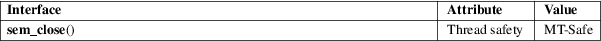

sem_close − close a named semaphore
POSIX threads library (libpthread, −lpthread)
#include <semaphore.h>
int sem_close(sem_t *sem);
sem_close() closes the named semaphore referred to by sem, allowing any resources that the system has allocated to the calling process for this semaphore to be freed.
On success sem_close() returns 0; on error, −1 is returned, with errno set to indicate the error.
|
EINVAL |
sem is not a valid semaphore. |
For an explanation of the terms used in this section, see attributes(7).

POSIX.1-2008.
POSIX.1-2001.
All open named semaphores are automatically closed on process termination, or upon execve(2).
sem_getvalue(3), sem_open(3), sem_post(3), sem_unlink(3), sem_wait(3), sem_overview(7)